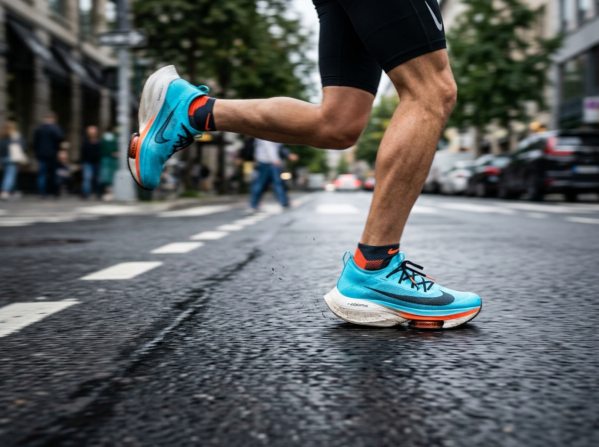

Win high-intent local searches
Optimize your Google Business Profile, store pages, reviews, and local content so runners find you when they search for running stores, gait analysis, shoe fittings, and specific footwear brands nearby.
Market your running store by combining local SEO, high-intent advertising, and community events that bring nearby runners through your doors.
Use helpful content, product-launch campaigns, and personalized follow-up to turn shoe shoppers into loyal customers.
Measure calls, visits, sales, and repeat purchases so every campaign supports profitable growth.
Serving independent running stores across the United States, excluding California.

Independent running stores win by connecting expert service and local community credibility with measurable digital campaigns.
Optimize your Google Business Profile, store pages, reviews, and local content so runners find you when they search for running stores, gait analysis, shoe fittings, and specific footwear brands nearby.
Use Google ads for active shoppers and Meta or Instagram ads for new releases, seasonal offers, and remarketing. Send every campaign to a page that matches the shopper's exact intent.
Build campaigns around run clubs, fitting clinics, race partnerships, and local events. Give runners a specific reason to register, visit, and bring a friend instead of chasing passive engagement.
Use email and SMS to follow up after purchases, recommend complementary gear, invite customers to events, and remind runners when their shoes may be nearing replacement mileage.
A single-location owner needs a focused plan that produces weekend foot traffic without creating another full-time job. Start with search visibility, reviews, one reliable event rhythm, and a simple dashboard that connects marketing activity to store visits and sales.
Multi-location operators need consistency and location-level reporting. Standardize campaigns and brand messaging, then measure calls, directions, leads, and revenue for each store so strong tactics can be repeated across the group.
Growing family-run shops can modernize without losing their local character. Keep the community voice customers trust while adding e-commerce, short-form video, and automated follow-up that supports the next generation of shoppers.
Explore our running-store marketing services, review retail campaign examples, and see how our buyer-persona strategy turns customer insight into focused campaigns.
Follower counts and impressions can provide context, but running stores need reporting tied to commercial results. Track local search visibility, calls, direction requests, event registrations, coupon redemptions, appointment requests, cost per sale, return on ad spend, and repeat purchase rate.
For multiple locations, compare the same metrics store by store. This exposes local opportunities, prevents uneven execution, and shows owners which campaigns deserve more budget.
Combine local SEO, high-intent paid ads, community events, and retention campaigns. Together, these channels attract nearby shoppers and create repeat business.
Improve your Google Business Profile, publish locally useful content, earn reviews, and promote run clubs, fitting events, and race partnerships throughout your service area.
Use Google Ads to capture active search demand. Use social ads for product launches, events, community building, and remarketing to people who already know your store.
Track calls, direction requests, website leads, in-store redemptions, cost per sale, return on ad spend, repeat purchases, and revenue by location.
DRS will review your local visibility, advertising opportunities, and customer-retention gaps, then show you where your running store can improve.
Request a Free Store AuditAvailable to U.S. running stores outside California.